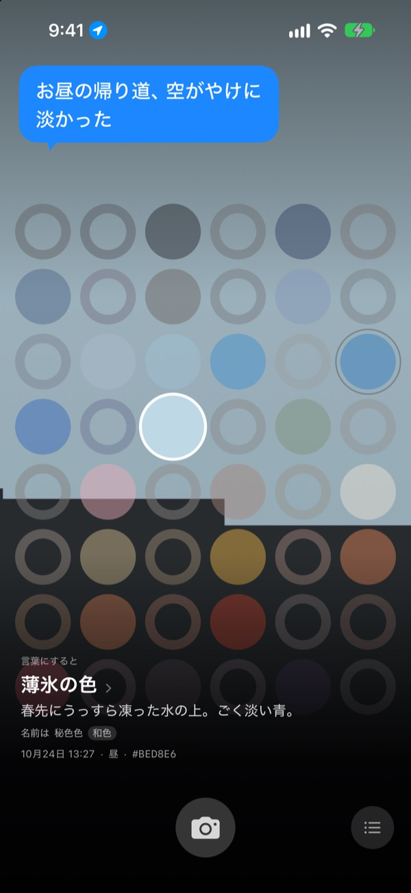
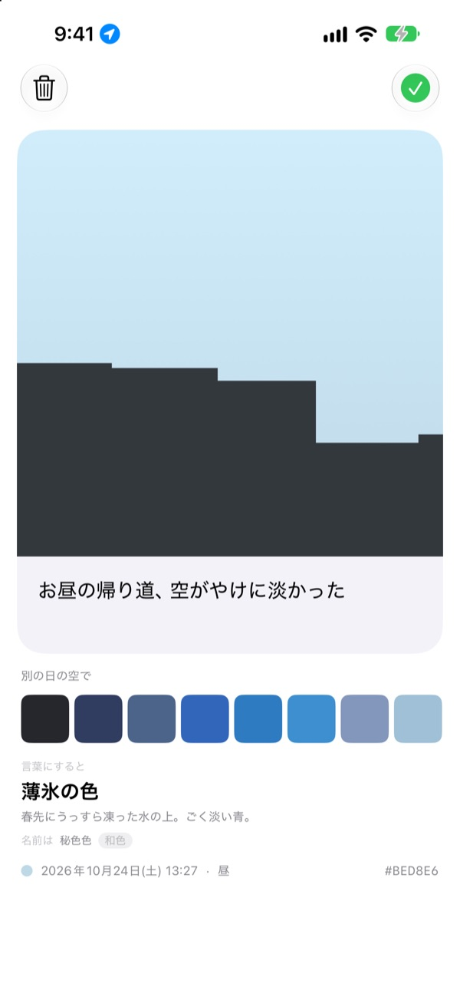
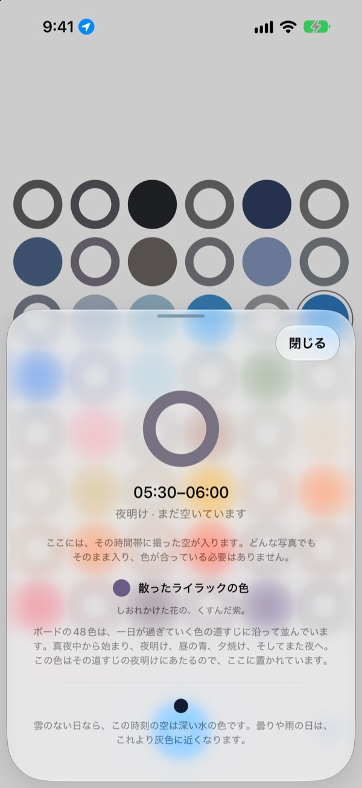
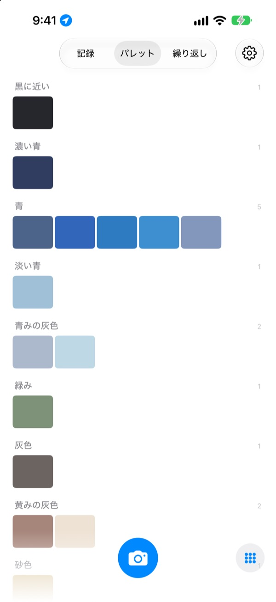

今日の空は
何色でしたか？
空を一枚撮ると、48マスのボードのうち、その時刻のマスが撮った色で埋まります。薄氷の色、プールのタイル色、熟柿の色のように、その色に似た名前もつきます。
無料です。アカウントもログインもいりません。

ボードを触ってみてください
マスをタップすると、それが一日のいつの空かがわかります。空の写真を入れると今の時刻のマスが埋まり、日付を進めるとボードがどう変わっていくかが見られます。
空は毎日見ているのに、覚えている色がない
通勤途中に見上げた空、昼ごはんのあと外に出たときの空。夜になると、それが何色だったか思い出せません。カメラロールに残った空の写真も、ほかの写真に埋もれていきます。SkyDexは空の写真を色として集め、今日の空がたどった道すじを一枚のボードに描き出します。
空ごとに名前がつきます
撮った色にはまず、薄氷の色、プールのタイル色、熟柿の色のように目に浮かぶ名前がつき、その下に韓国伝統色、和色、顔料、標準色から選んだ名前が続きます。
十分に近ければ「名前は」、離れていれば「いちばん近い名前は」と、正直に伝えます。

ひとこと残せます
撮るとすぐにカードが開きます。その空を見て思ったことを一行書いておくと、ボードでそのマスをタップしたとき、空の上にまた浮かびます。
別の日に集めた空の色をこの写真の空に重ねてみたり、画像にして共有したりもできます。

空きマスが道しるべになります
空きマスをタップすると、それが一日のいつなのか、どんな色を探せばいいのかを教えてくれます。雲のない日ならこの時刻の空が何色になるかも、いる場所の日の出と日の入りに合わせて伝えます。
色が合っている必要はありません。曇りの日のグレーも、その日の空の色です。

記録、パレット、繰り返し
撮った空を時間順に眺め、集めた色を青、灰色、砂色といった系統ごとのパレットにまとめます。同じ時刻の空を別の日にもう一度撮ると、ふたつが並びます。
ホーム画面のウィジェットで、今日のボードと今日の空をすぐに確かめられます。

はじめるのは三つのステップだけ
- 1
空を見上げる
ボードの下のカメラボタンを押し、正方形いっぱいに空が入るように撮ります。
- 2
マスが埋まる
今の時刻のマスが撮った色で埋まり、名前がつきます。
- 3
一行を残す
開いたカードに、その空を見て思ったことを書きます。
ボードは一日をこう分けます
- 真夜中 · 0時〜5時
- 6マス
- 夜明け · 5時〜8時
- 6マス
- 昼 · 8時〜16時
- 12マス
- 午後遅く · 16時〜18時
- 6マス
- 夕焼け · 18時〜21時
- 12マス、15分ごとに1マス
- 夜 · 21時〜24時
- 6マス
空の移り変わりが速い夕焼けどきはマスが細かく、長いあいだ変わらない真夜中はマスが広くなっています。いちばん上が真夜中で、下へ進むほど一日が流れていきます。
よくある質問
マスはどうやって埋まりますか？
今日撮った空は、撮った時刻のマスを埋めます。思っていたのと違う色でも、そのまま入ります。その時刻の空は実際にそうだったのですから。前に集めた空は色で入ります。あるマスの色に十分近ければそのマスを埋め、ひとつの空が埋めるのはひとつのマスだけです。
昨日埋まっていたマスが、今日は空いています。
ボードは「今日」です。昨日撮った空が時刻で埋めていたマスは、日付が変わると色だけで合わせ直します。だから、ほとんど埋まる日もあれば、がらんと見える日もあります。写真が消えたわけではありません。集めた空はすべて記録に、色の順ではパレットに残っています。
埋めたマスがだんだん薄くなります。
わざとそうしています。写真は一週間は本来の色のままで、その後の八週間でゆっくり色あせていきます。削除されるわけではなく、最後まで消えきることもありません。その時間帯の空をもう一度撮れば、すぐに本来の色に戻ります。途切れる連続記録も、取り戻さなければならない数字もありません。
色が合っていないといけませんか？
いいえ。合格や不合格といった判定はありません。撮った写真は必ず保存され、曇りの日のグレーもその日の空の色です。
なぜ位置情報を求めるのですか？
空きマスをタップしたとき、雲のない日のこの時刻の空の色を、いる場所の日の出と日の入りに合わせて伝えるためだけに使います。使うのはキロメートル単位のおおよその位置だけで、座標が写真に付くことはありません。許可しなくてもアプリはそのまま使え、その場合はソウルを基準にします。
写真アプリにある空も入れられますか？
はい。カメラの代わりに写真アプリから選んだ空も正方形に切り抜かれて入り、いま撮った空と同じように今の時刻のマスを埋めます。
写真を消すにはどうすればいいですか？
写真を開いて「削除」をタップするか、記録で左にスワイプします。端末と iCloud の両方から削除されます。アプリを削除しても iCloud のコピーは残るので、もう一度インストールすれば集めた空が戻ってきます。
機種変更をしたら、集めた空はどうなりますか？
集めた空はあなたの iCloud に保存され、同じ Apple アカウントでサインインした新しい端末に引き継がれます。アカウントもサーバーもなく、写真や色が開発者に送られることはありません。広告もトラッキングもありません。
本当に無料ですか？
はい、すべての機能が無料です。気に入ったらアプリ内から開発者にチップを送れますが、チップで使えるようになる機能はありません。
どの端末で使えますか？
iOS 17.0 以降の iPhone で使えます。縦向きの画面専用です。
不具合やおかしな動き、伝えたいことがあれば leeo@kakao.com までお送りください。どんな状況だったかと iOS のバージョンを添えていただくと、原因がずっと見つけやすくなります。